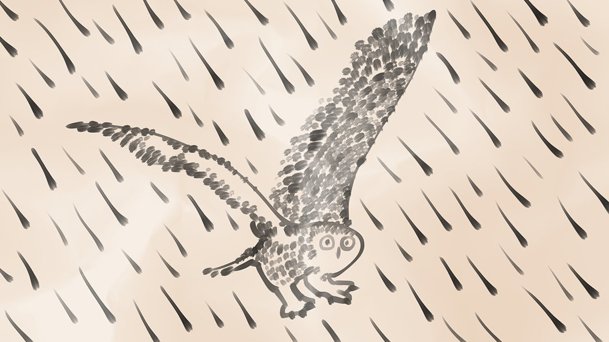
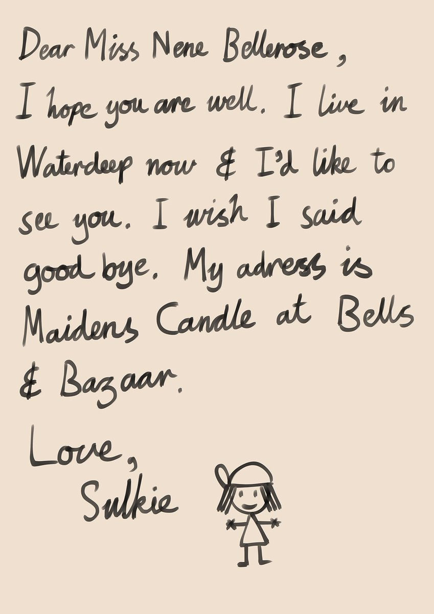

I’m sorry everyone I got scared and I panicked. I think I’m feeling better now. Breadstick is with me.
4 Likes, 0 Shares
6th of Flamerule, 1494 DR 1:22 AM

I’m sorry everyone I got scared and I panicked. I think I’m feeling better now. Breadstick is with me.
4 Likes, 0 Shares
6th of Flamerule, 1494 DR 1:22 AM
@O_W_Thought replied…
@JClark_DM replied…
I was crying because of something I was thinking about and it took over me.
2 Likes, 0 Shares
6th of Flamerule, 1494 DR 1:26 AM
I am staying inside today because I’m still shaky from last night and I want to be safe.
4 Likes, 0 Shares
6th of Flamerule, 1494 DR 11:36 AM
Thank you everyone who gave me advice last night. Sometimes the natural cycles get the better of me and I lose track of my mind.
2 Likes, 0 Shares
6th of Flamerule, 1494 DR 1:56 PM
The mistake I made was leaving Nene. I must write a letter to her. I hope she doesn’t hate me.
3 Likes, 0 Shares
6th of Flamerule, 1494 DR 2:06 PM
@JClark_DM replied…
This is the rainy snowy living thing picture that I promised that I would draw. It’s a birdie.
8 Likes, 0 Shares
6th of Flamerule, 1494 DR 4:55 PM
@It_hit_the_fan replied…
Happy and sad tears. Yes, you’re right.
3 Likes, 0 Shares
6th of Flamerule, 1494 DR 10:32 PM
Did it bother you that I got scared and showed it?
1 Like, 0 Shares
6th of Flamerule, 1494 DR 11:00 PM
I got a different type of food for Breadstick today. I hope it’s more appealing.
1 Like, 0 Shares
7th of Flamerule, 1494 DR 5:46 PM
Wow I have been busy today. I went to the market and also practised following maps.
4 Likes, 0 Shares
7th of Flamerule, 1494 DR 9:49 PM
@JClark_DM replied…
Replying to @JClark_DM
I got Breadstick’s cat food and looked at some ink I can’t afford. I watched someone play the rebec for a while and they are much better than I am wow. I didn’t see any good socks but I don’t need new ones yet anyway.
4 Likes, 0 Shares
7th of Flamerule, 1494 DR 9:58 PM
@JClark_DM replied…
Replying to @JClark_DM
Wow that’s amazing.
2 Likes, 0 Shares
7th of Flamerule, 1494 DR 10:14 PM
No one was bothered by me getting upset. I don’t know what to say.
3 Likes, 0 Shares
7th of Flamerule, 1494 DR 10:31 PM
@kthexsis replied…
Replying to @kthexsis
I get upset like that sometimes and usually people avoid me when it happens.
3 Likes, 0 Shares
7th of Flamerule, 1494 DR 10:54 PM
@JClark_DM replied…
How should I begin my letter to Nene?
1 Like, 0 Shares
7th of Flamerule, 1494 DR 11:05 PM
One of the marked dangerous packages today made noises whenever I moved it, so I had to deliver it slowly and carefully.
5 Likes, 0 Shares
8th of Flamerule, 1494 DR 6:35 PM
I am good at what I do.
4 Likes, 0 Shares
8th of Flamerule, 1494 DR 8:13 PM
The bars are the same length so I will combine them. My letter will begin with Dear Miss Nene Bellerose.
4 Likes, 0 Shares
8th of Flamerule, 1494 DR 10:37 PM
What should the first line of my letter be?
2 Likes, 1 Share
8th of Flamerule, 1494 DR 11:00 PM
One of my dangerous packages today made loud noises when I picked it up and now my head hurts.
4 Likes, 0 Shares
9th of Flamerule, 1494 DR 6:07 PM
@kthexsis replied…
Replying to @kthexsis
I am eating my favourite meal of stew and I feel better.
3 Likes, 0 Shares
9th of Flamerule, 1494 DR 7:00 PM
@kthexsis replied…
@JClark_DM replied…
Replying to @JClark_DM
That is a good idea but I don’t have those things.
2 Likes, 0 Shares
9th of Flamerule, 1494 DR 9:10 PM
@kthexsis sent a message…
Replying to @kthexsis
That sounds like a trap I wouldn’t go.
4 Likes, 0 Shares
9th of Flamerule, 1494 DR 6:08 PM
@kthexsis replied…
Replying to @kthexsis
But what if it is? 🤔 I don’t know you might need to get advice from another person.
4 Likes, 0 Shares
9th of Flamerule, 1494 DR 7:06 PM
@kthexsis replied…
Replying to @kthexsis
Do you have a magic that tells you if someone is good or not? I don’t know how magic works.
4 Likes, 0 Shares
9th of Flamerule, 1494 DR 7:11 PM
@kthexsis replied…
Replying to @kthexsis
Well you can go visit the wizard I guess but just be careful. Have you got a knife or something?
4 Likes, 0 Shares
9th of Flamerule, 1494 DR 7:51 PM
@kthexsis replied…
Replying to @kthexsis
That is good preparation. Remember, if you get into trouble: stab quickly then run.
4 Likes, 0 Shares
9th of Flamerule, 1494 DR 8:25 PM
@JClark_DM replied…
I hope you are well. That’s a good first line thank you everyone.
5 Likes, 0 Shares
9th of Flamerule, 1494 DR 10:50 PM
What should the second line of my letter be?
1 Like, 0 Shares
9th of Flamerule, 1494 DR 11:03 PM
@JClark_DM replied…
Replying to @JClark_DM
When I left I was all on my own and I don’t think I told her where I was going or why. Also I didn’t tell her I was going I just left.
4 Likes, 0 Shares
10th of Flamerule, 1494 DR 9:31 AM
@JClark_DM replied…
I am a good person and others enjoy my company.
6 Likes, 0 Shares
9th of Flamerule, 1494 DR 11:49 PM
Replying to @SulkieB
By the way one of the couriers from work told me about this tip to feel better. Say nice things about yourself sometimes.
4 Likes, 0 Shares
9th of Flamerule, 1494 DR 11:54 PM
I am an intelligent and capable person.
8 Likes, 0 Shares
10th of Flamerule, 1494 DR 6:27 PM
Alright the next line will be about how I live in Waterdeep now.
4 Likes, 0 Shares
10th of Flamerule, 1494 DR 10:32 PM
Replying to @SulkieB
I hope this letter is good when it’s done.
4 Likes, 0 Shares
10th of Flamerule, 1494 DR 10:33 PM
What should the third line of my letter be?
1 Like, 0 Shares
10th of Flamerule, 1494 DR 11:00 PM
I got to do my first pick up today from the docks. Timmy says I am a good worker and I can start doing regular pick ups next week. I will get paid more.
5 Likes, 0 Shares
11th of Flamerule, 1494 DR 2:12 PM
Hello @RogueMostLikely I am going to start paying you one gold every week for the room starting from last week. Don’t say no.
6 Likes, 0 Shares
11th of Flamerule, 1494 DR 2:20 PM
@RogueMostLikely replied…
I am proud of myself.
5 Likes, 0 Shares
11th of Flamerule, 1494 DR 6:15 PM
@JClark_DM replied…
Replying to @JClark_DM
Oh I’m just doing that exercise where you say nice things about yourself. But if I had to pick something I guess it would be being good at my job.
4 Likes, 0 Shares
11th of Flamerule, 1494 DR 6:34 PM
@JClark_DM replied…
Replying to @JClark_DM
Wow you are nice. Yes it is difficult because I am still not great at maps and sometimes I get lost and have to use the landmarks again.
3 Likes, 0 Shares
11th of Flamerule, 1494 DR 6:45 PM
@kthexsis sent a message…
@JClark_DM replied…
@azthoran replied…
Replying to @kthexsis
How close is very close? Within arms reach? Remember my tip.
4 Likes, 0 Shares
11th of Flamerule, 1494 DR 6:54 PM
@kthexsis replied…
I’d like to see you. It’s a true third line to my letter.
5 Likes, 0 Shares
11th of Flamerule, 1494 DR 10:31 PM
@AarAekeekra replied…
What’s the next line of my letter?
1 Like, 0 Shares
11th of Flamerule, 1494 DR 11:00 PM
The strap on my delivery bag broke I will need a new one for next week.
2 Likes, 0 Shares
12th of Flamerule, 1494 DR 1:46 PM
@kthexsis replied…
Replying to @kthexsis
No heavy packages today just letters. I think everything is fine.
3 Likes, 0 Shares
12th of Flamerule, 1494 DR 2:05 PM
Replying to @SulkieB
Bag has mud on it now but it’s broken anyway.
3 Likes, 0 Shares
12th of Flamerule, 1494 DR 2:10 PM
@kthexsis replied…
Replying to @kthexsis
The other couriers have way nicer bags than me because I am new so maybe I’ll get a better one now?
3 Likes, 0 Shares
12th of Flamerule, 1494 DR 2:17 PM
@JClark_DM replied…
Replying to @JClark_DM
No I don’t.
3 Likes, 0 Shares
12th of Flamerule, 1494 DR 4:33 PM
@JClark_DM replied…
Replying to @JClark_DM
I will consider it.
4 Likes, 0 Shares
12th of Flamerule, 1494 DR 5:12 PM
@JClark_DM replied…
I own almost ten gold pieces of money now.
4 Likes, 0 Shares
12th of Flamerule, 1494 DR 7:40 PM
I will write that I wished I said goodbye. I will also write my address so Nene knows where to visit. Now I just need to sign it.
5 Likes, 0 Shares
12th of Flamerule, 1494 DR 10:34 PM
How should I sign my letter to Nene? I have never signed a letter so I don’t know which is the right way.
2 Likes, 0 Shares
12th of Flamerule, 1494 DR 11:00 PM
Spelling is so hard. It’s a good thing little bird helps me write things most of the time.
6 Likes, 0 Shares
13th of Flamerule, 1494 DR 3:17 PM
Love?! But that was the joke answer!
4 Likes, 0 Shares
13th of Flamerule, 1494 DR 10:40 PM
Replying to @SulkieB
I guess I have to write it now. Alas.
2 Likes, 0 Shares
13th of Flamerule, 1494 DR 10:55 PM
Alright, here is my finished letter. I worked very hard to make the spelling good. I hope the signature works.
8 Likes, 1 Share
13th of Flamerule, 1494 DR 11:00 PM
Replying to @SulkieB
Is this letter good enough to send?
1 Like, 0 Shares
13th of Flamerule, 1494 DR 11:02 PM
Got Breadstick’s food for the week. Breadstick still needs to exercise more instead of riding on my shoulders all day.
4 Likes, 0 Shares
14th of Flamerule, 1494 DR 3:06 PM
I am getting much better with Rebecca. I can play without squeaking now and I get most of the notes right some of the time.
3 Likes, 0 Shares
14th of Flamerule, 1494 DR 9:12 PM
I will send the letter tomorrow. Fleet Feet gives me discounts on my own deliveries because I am a courier.
4 Likes, 0 Shares
14th of Flamerule, 1494 DR 10:35 PM
I am so nervous about the letter. Ah!
2 Likes, 0 Shares
14th of Flamerule, 1494 DR 11:48 PM
I need to calm down, what should I do?
1 Like, 0 Shares
14th of Flamerule, 1494 DR 11:51 PM
I put the letter in the mail this morning and I made sure it got onto this week’s mail cart to Baldur’s Gate. It cost me a whole gold piece even with my Fleet Feet discount.
5 Likes, 0 Shares
15th of Flamerule, 1494 DR 1:12 PM
@kthexsis sent a message…
Replying to @kthexsis
You need to escape, but I don’t know how. Wizards can see into your head so he might already know about your knife. Um, wizards like books I think? Maybe you can threaten his books until he lets you go? Oh this is bad.
2 Likes, 0 Shares
15th of Flamerule, 1494 DR 1:33 PM
Replying to @SulkieB
Oh! If you invite him into your mind and then create thoughts that trap and scare him that might work. He controls the world around you but you control what’s in your mind. Fight him in there.
2 Likes, 0 Shares
15th of Flamerule, 1494 DR 1:37 PM
@kthexsis replied…
Replying to @kthexsis
I don’t really know how to help but please stay safe, Thexy.
1 Like, 0 Shares
15th of Flamerule, 1494 DR 3:05 PM
I just had a good idea.
3 Likes, 0 Shares
15th of Flamerule, 1494 DR 7:41 PM
Alright I will say positive things to calm down. It worked last week even though I didn’t always believe what I was saying.
6 Likes, 0 Shares
15th of Flamerule, 1494 DR 10:33 PM
Nene doesn’t hate me and she will write back.
6 Likes, 0 Shares
15th of Flamerule, 1494 DR 10:37 PM
Thexy will be OK and escape the bad wizard.
5 Likes, 0 Shares
15th of Flamerule, 1494 DR 10:38 PM
@kthexsis replied…
Replying to @kthexsis
I hope so.
3 Likes, 0 Shares
16th of Flamerule, 1494 DR 12:22 AM
I like eating stew it makes me feel better. I can have it often now because of my money. When in the week should I eat it?
3 Likes, 0 Shares
15th of Flamerule, 1494 DR 11:00 PM
@kthexsis sent a message…
Replying to @kthexsis
If you ever come to Waterdeep, I will give you a red feather.
4 Likes, 0 Shares
16th of Flamerule, 1494 DR 1:01 PM
@kthexsis replied…
It’s a long walk down to the docks to do pick ups.
4 Likes, 0 Shares
16th of Flamerule, 1494 DR 6:17 PM
OK will have stew on the last day of work each week. It will be a good celebration of the weekend.
4 Likes, 0 Shares
16th of Flamerule, 1494 DR 10:31 PM
My life is being filled with my own routines and cycles.
4 Likes, 0 Shares
16th of Flamerule, 1494 DR 11:09 PM
@AarAekeekra replied…
I need to do something new and interesting again. I like following the cycles but these ones are too simple and easy to understand.
4 Likes, 0 Shares
16th of Flamerule, 1494 DR 11:13 PM
@AarAekeekra replied…
Replying to @AarAekeekra
That’s an interesting idea.
4 Likes, 0 Shares
17th of Flamerule, 1494 DR 11:41 AM
Help me find something new and interesting in Waterdeep.
1 Like, 0 Shares
16th of Flamerule, 1494 DR 11:20 PM
Thank you everyone for helping me make decisions. I will look for interesting things in the Dock Ward. That’s a good choice because I pick up packages from there during work already.
5 Likes, 0 Shares
17th of Flamerule, 1494 DR 10:44 PM
What kind of interesting things should I look for?
1 Like, 0 Shares
17th of Flamerule, 1494 DR 11:00 PM
By the way today was really boring I just delivered lots of letters and fed Breadstick.
4 Likes, 0 Shares
17th of Flamerule, 1494 DR 11:02 PM
One of my packages today grew legs and ran away? I chased it and caught it but it was really strong and I lost it again. I hope it knows where it’s going.
2 Likes, 0 Shares
18th of Flamerule, 1494 DR 2:26 PM
@rasa_ella replied…
Replying to @rasa_ella
It was wooden how did you know?
1 Like, 0 Shares
18th of Flamerule, 1494 DR 4:03 PM
Breadstick keeps climbing on me when I use my magic slate. I give you attention all day you needy cat!
4 Likes, 0 Shares
18th of Flamerule, 1494 DR 9:59 PM
OK I will look for interesting places. Maybe the place Thexy was talking about?
5 Likes, 0 Shares
18th of Flamerule, 1494 DR 10:31 PM
How should I look for interesting places?
1 Like, 0 Shares
18th of Flamerule, 1494 DR 11:00 PM
@AarAekeekra replied…
Replying to @AarAekeekra
I haven’t spent a lot of time in the Dock Ward so I don’t know what the best way is or what’s there.
1 Like, 0 Shares
19th of Flamerule, 1494 DR 12:12 AM
@AarAekeekra replied…
Replying to @AarAekeekra
It’s up to little bird and all my friends to decide!
1 Like, 0 Shares
19th of Flamerule, 1494 DR 12:41 AM
@AarAekeekra replied…
Replying to @AarAekeekra
@AarAekeekra Well I’ve had my knife longer, but my cat is warm and fuzzy. You’re right it is a hard choice.
2 Likes, 0 Shares
19th of Flamerule, 1494 DR 1:41 AM
@kthexsis sent a message…
@AarAekeekra replied…
@kthexsis replied…
@AarAekeekra replied…
Replying to @kthexsis
Oh I just realised you’re not talking about a reindeer. No wonder I was confused. Little bird didn’t read the word clearly enough.
3 Likes, 0 Shares
19th of Flamerule, 1494 DR 1:39 AM
@kthexsis replied…
Replying to @kthexsis
I need to learn to read better. 😣
3 Likes, 0 Shares
19th of Flamerule, 1494 DR 1:45 AM
@kthexsis replied…
I’ve been uncomfortable all day today. I think I slept weird. I need to rearrange my blanket nest.
3 Likes, 0 Shares
19th of Flamerule, 1494 DR 1:20 PM
Hooray I finally made a whole ten gold pieces!
3 Likes, 0 Shares
19th of Flamerule, 1494 DR 5:35 PM
My letter will arrive next week. Then it will take another two weeks to get the reply.
3 Likes, 0 Shares
19th of Flamerule, 1494 DR 5:40 PM
Replying to @SulkieB
And only if Nene wants to reply but I should be positive like you all said so I think she definitely will.
2 Likes, 0 Shares
19th of Flamerule, 1494 DR 5:41 PM
Stew! Meat and vegetables. Yum yum yum.
4 Likes, 0 Shares
19th of Flamerule, 1494 DR 8:19 PM
OK I will look for places by being friendly. I will bring Breadstick.
4 Likes, 0 Shares
19th of Flamerule, 1494 DR 10:34 PM
I will see what I can find but what kind of interesting places do you hope I discover?
3 Likes, 0 Shares
19th of Flamerule, 1494 DR 11:00 PM
@RogueMostLikely sent a message…
Replying to @RogueMostLikely
Do I need to take the cat for a walk?
3 Likes, 0 Shares
20th of Flamerule, 1494 DR 12:38 AM
Hey @RogueMostLikely can you ask how much is the cheapest room in the place we’re staying?
1 Like, 0 Shares
20th of Flamerule, 1494 DR 12:06 PM
@RogueMostLikely replied…
Replying to @RogueMostLikely
Because, you know, if Nene comes to visit she will need a place to stay.
0 Likes, 0 Shares
20th of Flamerule, 1494 DR 12:24 PM
Wow I found a cool place but I’ll explain it later when I get back to the room.
3 Likes, 0 Shares
20th of Flamerule, 1494 DR 9:23 PM
@JClark_DM replied…
Oh by the way I talked to Timmy at the start of the week about my broken delivery bag. He ordered a new one so I should get it soon.
2 Likes, 0 Shares
20th of Flamerule, 1494 DR 9:56 PM
Replying to @SulkieB
I guess it takes a little while to make a bag.
2 Likes, 0 Shares
20th of Flamerule, 1494 DR 9:56 PM
OK so listen to this. I did find a music place like you were all hoping. I don’t know the name of it yet but I know where it is.
2 Likes, 0 Shares
20th of Flamerule, 1494 DR 10:31 PM
Replying to @SulkieB
They had so much music! Usually there’s people playing for money in the markets but this place was different because everyone was there to hear the music! And it was really good!
2 Likes, 0 Shares
20th of Flamerule, 1494 DR 10:33 PM
Replying to @SulkieB
There were lots of instruments and different songs. I have a lot of practice to do if I want to be that good.
2 Likes, 0 Shares
20th of Flamerule, 1494 DR 10:35 PM
Replying to @SulkieB
They also sold food there so the people who wanted me to find food were also right. I didn’t eat anything though because I didn’t bring my money. Also I had to sneak in because they were guarding the entrance.
2 Likes, 0 Shares
20th of Flamerule, 1494 DR 10:37 PM
Do you like that I ask a question every day or would you like more time between them?
2 Likes, 0 Shares
20th of Flamerule, 1494 DR 11:01 PM
Looks like the music place only has music at night. Oh well.
3 Likes, 0 Shares
21st of Flamerule, 1494 DR 1:24 PM
@DaemonLethe replied…
Replying to @DaemonLethe
I would like to hear music by people who play the rebec because that’s the instrument I am learning.
1 Like, 0 Shares
21st of Flamerule, 1494 DR 3:32 PM
@DaemonLethe replied…
Replying to @DaemonLethe
That’s OK. It’s a tricky instrument to play.
1 Like, 0 Shares
21st of Flamerule, 1494 DR 3:37 PM
@DaemonLethe replied…
Replying to @DaemonLethe
It’s like a tiny little lute but you use a bow instead of your fingers and it only has three strings.
1 Like, 0 Shares
21st of Flamerule, 1494 DR 3:40 PM
@DaemonLethe replied…
Replying to @DaemonLethe
It’s weird I think someone invented it by taking a bow and arrow and rubbing it on a lute. The viol is similar but way too big for me.
2 Likes, 0 Shares
21st of Flamerule, 1494 DR 3:45 PM
@DaemonLethe replied…
Replying to @DaemonLethe
Oh! That would be so scary I think I would have to be a lot better first.
2 Likes, 0 Shares
21st of Flamerule, 1494 DR 3:48 PM
@DaemonLethe replied…
Replying to @DaemonLethe
I’ll tell her but I think she likes the bath in this room too much.
2 Likes, 0 Shares
21st of Flamerule, 1494 DR 4:10 PM
@DaemonLethe replied…
@RogueMostLikely replied…
The sky is so reliable.
1 Like, 0 Shares
21st of Flamerule, 1494 DR 10:17 PM
OK I will keep asking questions every day. I’m glad that you like my questions. I will take a break when I need one though.
1 Like, 0 Shares
21st of Flamerule, 1494 DR 10:31 PM
Should I go back to the music place soon?
2 Likes, 0 Shares
21st of Flamerule, 1494 DR 11:00 PM
I have news. I got my new delivery bag this morning! It’s much cleaner and not broken and also has more pockets. I am glad.
6 Likes, 0 Shares
22nd of Flamerule, 1494 DR 12:10 PM
Oh also Timmy said we’re switching from a seven day week to a ten day week at work because the customers kept complaining. The other couriers told me he’s being trying to make the seven day week catch on because he’s eccentric but nobody else uses it.
3 Likes, 0 Shares
22nd of Flamerule, 1494 DR 12:17 PM
Replying to @SulkieB
We’re changing back after the Midsummer festival. He said we’ll get breaks on fifth-day, ninth-day and tenth-day each week so it’s about the same amount of work.
3 Likes, 0 Shares
22nd of Flamerule, 1494 DR 12:20 PM
OK I will go back to the music place soon and just enjoy the music. Thank you for helping me everyone.
3 Likes, 0 Shares
22nd of Flamerule, 1494 DR 10:38 PM
If Nene comes to visit what’s the most important thing we should do?
2 Likes, 0 Shares
22nd of Flamerule, 1494 DR 11:00 PM
@kthexsis sent a message…
Replying to @kthexsis
Yes. Everyone should have a name.
3 Likes, 0 Shares
23rd of Flamerule, 1494 DR 1:41 AM
@kthexsis replied…
Replying to @kthexsis
Nene and Kiki are names that came from longer names. Breadstick was named after something I like. Maybe use one of those techniques?
1 Like, 0 Shares
23rd of Flamerule, 1494 DR 11:12 AM
It’s after work and I’m going to the music place in the Dock Ward to listen to music.
3 Likes, 0 Shares
23rd of Flamerule, 1494 DR 6:22 PM
I’m tired because of listening to music. I won’t be able to see your answer or ask a new question tonight I’m sorry.
4 Likes, 0 Shares
23rd of Flamerule, 1494 DR 10:01 PM
Replying to @SulkieB
Thank you for taking care of me… 😴
2 Likes, 0 Shares
23rd of Flamerule, 1494 DR 10:10 PM
I’m so tired I can’t stop yawning.
2 Likes, 0 Shares
24th of Flamerule, 1494 DR 1:11 PM
The best thing at the music place yesterday was when lots of people played music at the same time. How do they do that? It’s so impressive. The people that play on the street are usually alone.
2 Likes, 0 Shares
24th of Flamerule, 1494 DR 6:03 PM
@RogueMostLikely sent a message…
Replying to @RogueMostLikely
You’re too much, J.
2 Likes, 0 Shares
24th of Flamerule, 1494 DR 7:11 PM
OK I just checked the question I asked before. The choice you picked is that I should explore with Nene if she comes to visit. Good idea.
1 Like, 0 Shares
24th of Flamerule, 1494 DR 7:16 PM
I know it will be a while before I get Nene’s reply, but I’m still nervous. Is there anything important I’ve forgotten?
1 Like, 0 Shares
24th of Flamerule, 1494 DR 11:24 PM
Replying to @SulkieB
Remember I asked her to come and visit. If she does then I don’t want to forget anything important. I could mess things up even more.
0 Likes, 0 Shares
24th of Flamerule, 1494 DR 11:27 PM
Breadstick was angry at one of the packages this morning so I checked and it was definitely dangerous so I put a sticker on it.
2 Likes, 0 Shares
25th of Flamerule, 1494 DR 12:12 PM
Replying to @SulkieB
This is the first time I’ve had a mislabelled package. The couriers at the office do good work but today I’m the one with the bonus coin. 😀
2 Likes, 0 Shares
25th of Flamerule, 1494 DR 12:14 PM
My cat is a warning cat.
4 Likes, 0 Shares
25th of Flamerule, 1494 DR 2:02 PM
Replying to @SulkieB
Oh! And my cat is also a warming cat. Get it? 🤭
4 Likes, 0 Shares
25th of Flamerule, 1494 DR 2:03 PM
Some people said I forgot something important about Nene’s visit, and some people said I didn’t. Now I’m even more confused.
3 Likes, 0 Shares
25th of Flamerule, 1494 DR 10:59 PM
@kthexsis replied…
Replying to @kthexsis
The Great Path has been gone for months now. I have to rely on my daily questions because I haven’t got anything else.
3 Likes, 0 Shares
26th of Flamerule, 1494 DR 12:43 AM
@azthoran replied…
Replying to @azthoran
Maybe. I don’t know. It went away after I was in Waterdeep for a while. But nobody else even knows about it, I’ve asked!
2 Likes, 0 Shares
26th of Flamerule, 1494 DR 1:11 AM
Replying to @SulkieB
I’m sorry I yelled. I’ll go say some nice things about myself to calm down.
2 Likes, 0 Shares
26th of Flamerule, 1494 DR 1:13 AM
@azthoran replied…
@kthexsis replied…
My question for today is: what could I have forgotten about Nene’s visit!? I can’t put any choices in this message because I don’t know the answers! Please help me.
3 Likes, 0 Shares
25th of Flamerule, 1494 DR 11:00 PM
@It_hit_the_fan replied…
Replying to @It_hit_the_fan
I asked J if there were other rooms in this building for Nene to stay, just in case. Do you think three people and a cat would be too many people for our room?
0 Likes, 0 Shares
25th of Flamerule, 1494 DR 11:11 PM
Replying to @SulkieB
But if Nene stays in another room, is it bad that she’s alone? This is the things that I never understand. 😟
0 Likes, 0 Shares
25th of Flamerule, 1494 DR 11:13 PM
@It_hit_the_fan replied…
The couriers at work said that maybe they’ll need to get cats to help find dangerous packages. 😀
5 Likes, 0 Shares
26th of Flamerule, 1494 DR 2:05 PM
@JClark_DM replied…
Replying to @JClark_DM
They are weird but good.
3 Likes, 0 Shares
26th of Flamerule, 1494 DR 5:47 PM
Use the mirror if you wish to talk to me, Lena.
That’s why I gave it to you.
Whoa! Am I going strange?! I just heard Renee’s voice. Um, that’s never happened before. 😧
2 Likes, 0 Shares
26th of Flamerule, 1494 DR 6:04 PM
Replying to @SulkieB
I, uh, I think I’ll go lie down.
2 Likes, 0 Shares
26th of Flamerule, 1494 DR 6:06 PM